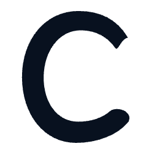
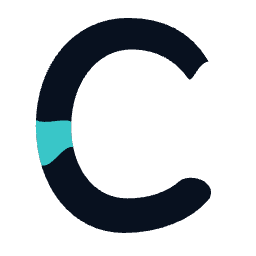
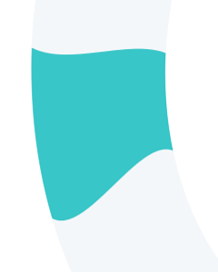
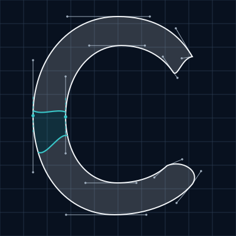

Final optical finishing
H1 benchmark
The selected H1 master, preserved exactly.
Pure white

Actual navbar scale · 36px mark box · Inter 600 / 425
Cool white + aqua



Actual navbar scale · 36px mark box · Inter 600 / 425
Pure navy

Actual navbar scale · 36px mark box · Inter 600 / 425
Navy + aqua

Actual navbar scale · 36px mark box · Inter 600 / 425
Optical details
The confluence remains the actual overlap of the two source curves. Its integrated filled area is held constant across the benchmark and both alternatives.


Polish B reduces the filled area to the right of the dotted line by 2.5%. Only the lower terminal face and adjoining inner return change; the outer body arcs stay fixed. The confluence lift is 0.5 units in the 100-unit design space, equivalent to 1.28px at 256px.
Source curves and controls

Pure black
Download vectors and native PNGs
- white: mark SVG · current lockup · +2px lockup · 256px PNG
- navy: mark SVG · current lockup · +2px lockup · 256px PNG
- black: mark SVG · current lockup · +2px lockup · 256px PNG
- primary: mark SVG · current lockup · +2px lockup · 256px PNG
- light: mark SVG · current lockup · +2px lockup · 256px PNG